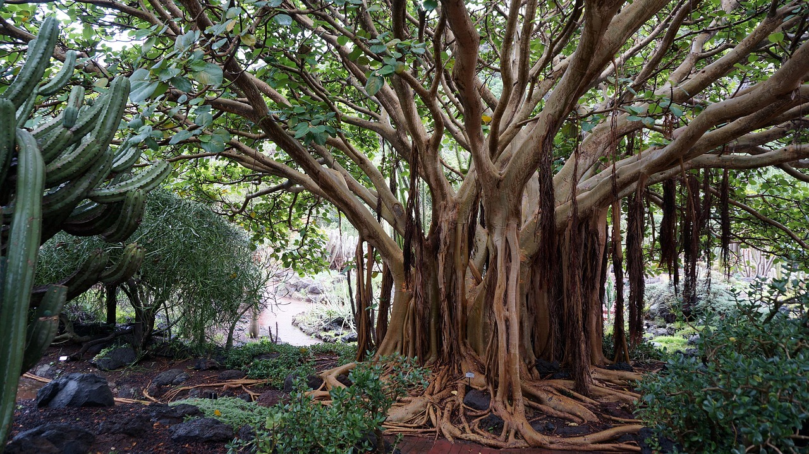

1. The National Plants of India
Click on the closed lotus bud to make it bloom and reveal its secret!
Indian Lotus (Nelumbo nucifera)
Lifespan: An annual to perennial aquatic plant whose seeds can survive for centuries.
Medicinal Properties: In traditional medicine, its roots and seeds are used to reduce fever, soothe the body, and aid digestion.
Requirements & Location: Thrives in still waters with muddy beds and plenty of sunlight. Found in ponds all across India.
Value & Function: Symbolizes spiritual purity and divine beauty. Provides shade and shelter for aquatic ecosystems.
The Bengal Banyan Tree (Ficus benghalensis)
The Living Wonder: This giant tree grows ceaselessly outward. Its branches drop aerial roots that turn into new trunks. A single tree can live to be 200 to 500 years old and cover the area of an entire forest!
Requirements & Location: Prefers a warm, humid tropical climate. The world's largest Banyan tree stands in the Botanical Garden in Kolkata.
Medicinal Uses: In Ayurvedic medicine, its milky sap is used to treat skin inflammation and toothaches.
Value: A massive ecosystem in itself. It provides shelter and food for thousands of birds, monkeys, and insects.

2. Sacred & Culturally Revered Trees
Solve nature's sliding puzzle! Click on the squares next to the empty space to piece together the image of the sacred Neem tree. Once the picture is complete, the hidden facts will be unlocked!
The Neem Tree (The Village Pharmacy)
Lifespan & Function: Can live up to 200 years. It filters pollutants from the air with exceptional efficiency.
Medicinal Value: A true Ayurvedic wonder! Its leaves have powerful antibacterial, antiviral, and anti-inflammatory properties. Ideal for treating skin conditions and acting as a natural insect repellent.
The Bodhi Tree (Sacred Fig)
Lifespan & Significance: Lives well over 1,000 years. It was beneath this tree that Buddha attained enlightenment.
Value & Location: Grows majestically near nearly every temple (especially inBodhgaya). For humans, it represents the ultimate symbol of inner peace.
3. Essential Crops & Jungle Giants
Scroll down to explore India's economic and ecological pillars.
Assam Tea Plant
Uses & Value: Shapes the economy of entire states. Provides caffeine and antioxidants, securing millions of jobs.
Requirements: Demands acidic soil, heavy rainfall, and hillside locations in Northeast India.
The Coconut Palm
Lifespan & Function: Lives around 80 to 100 years. Also known as the "Tree of Heaven" because every single part can be used (wood, fiber, water, oil).
Medicinal Uses: Coconut water is rich in electrolytes and helps reduce fever, while the oil nourishes damaged skin.
Indian Sandalwood
Jungle Giant: A precious tree that takes 30 years to fully develop its rich aroma. The wood is highly valuable for fine perfumes and religious incense ceremonies.
Conservation: Vulnerable in the wild; logging is now under strict government control.